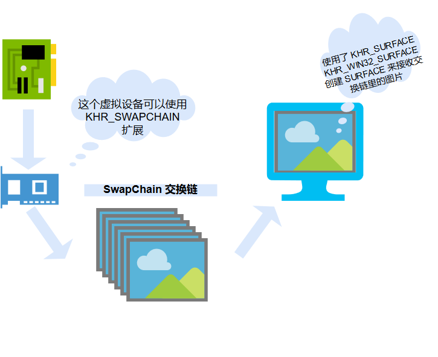

1.6 创建交换链
(加入我Rust图形学群回答不上来入群问题的菜鸡们注意了!)
因为交换链需要使用确切的窗口大小,所以我们需要把窗口大小写进consts.rs,可能有人要问了什么是交换链?

这个图大概能完整的概括本章节的内容.
SwapChain就是一堆图片,作用呢就是万一显卡没跟上,或者显卡太快了,让用户感觉画面没有什么实质性的变化的一个工具,从某种意义上降低了卡顿的感觉.
我们先来吧SwapChain里的图像大大小(也就是窗口的大小)规定好,你可不想看见带黑边的图像吧!
pub const WINDOW_WIDTH: u32 = 800;
pub const WINDOW_HEIGHT: u32 = 600;
然后对app.rs进行操作,固定窗口大小,自己use一下
let window = window_create(WINDOW_TITLE, WINDOW_WIDTH, WINDOW_HEIGHT, &ev);
看图,你会发现这个SwapChain对Logical Device是强依赖的,在这里需要改太多东西了,我一点一点来讲一讲
- 在
QueueFamilyIndices添加present_family项(当前家族(有人告诉我中文翻译叫簇)) - 更新
impl - 检查当前设备支不支持我们要的交换链扩展
use super::validation::*;
use super::surface::*;
use ash::version::DeviceV1_0;
use ash::version::InstanceV1_0;
use ash::vk;
use std::ffi::CString;
use std::os::raw::c_char;
use std::ptr;
pub struct QueueFamilyIndices {
pub graphics_family: i32,
pub present_family: i32,
}
impl QueueFamilyIndices {
pub fn new() -> QueueFamilyIndices {
QueueFamilyIndices {
graphics_family: -1,
present_family: -1,
}
}
pub fn is_complete(&self) -> bool {
self.graphics_family >= 0 && self.present_family >= 0
}
}
pub fn create_logical_device(
instance: &ash::Instance,
physical_device: vk::PhysicalDevice,
validation: &ValidationInfo,
surface_stuff: &SurfaceStuff,
) -> (ash::Device, QueueFamilyIndices) {
let indices = find_queue_family(instance, physical_device, surface_stuff);
use std::collections::HashSet;
let mut unique_queue_families = HashSet::new();
unique_queue_families.insert(indices.graphics_family as u32);
unique_queue_families.insert(indices.present_family as u32);
let queue_priorities = [1.0_f32];
let mut queue_create_infos = vec![];
for &queue_family in unique_queue_families.iter() {
let queue_create_info = vk::DeviceQueueCreateInfo {
s_type: vk::StructureType::DEVICE_QUEUE_CREATE_INFO,
p_next: ptr::null(),
flags: vk::DeviceQueueCreateFlags::empty(),
queue_family_index: queue_family,
p_queue_priorities: queue_priorities.as_ptr(),
queue_count: queue_priorities.len() as u32,
};
queue_create_infos.push(queue_create_info);
}
let physical_device_features = vk::PhysicalDeviceFeatures {
..Default::default() // default just enable no feature.
};
let requred_validation_layer_raw_names: Vec<CString> = validation
.required_validation_layers
.iter()
.map(|layer_name| CString::new(*layer_name).unwrap())
.collect();
let enable_layer_names: Vec<*const c_char> = requred_validation_layer_raw_names
.iter()
.map(|layer_name| layer_name.as_ptr())
.collect();
let enable_extension_names = [
ash::extensions::khr::Swapchain::name().as_ptr(), // currently just enable the Swapchain extension.
];
let device_create_info = vk::DeviceCreateInfo {
s_type: vk::StructureType::DEVICE_CREATE_INFO,
p_next: ptr::null(),
flags: vk::DeviceCreateFlags::empty(),
queue_create_info_count: queue_create_infos.len() as u32,
p_queue_create_infos: queue_create_infos.as_ptr(),
enabled_layer_count: if validation.is_enable {
enable_layer_names.len()
} else {
0
} as u32,
pp_enabled_layer_names: if validation.is_enable {
enable_layer_names.as_ptr()
} else {
ptr::null()
},
enabled_extension_count: enable_extension_names.len() as u32,
pp_enabled_extension_names: enable_extension_names.as_ptr(),
p_enabled_features: &physical_device_features,
};
let device: ash::Device = unsafe {
instance
.create_device(physical_device, &device_create_info, None)
.expect("Failed to create logical device!")
};
(device, indices)
}
pub fn find_queue_family(
instance: &ash::Instance,
physical_device: vk::PhysicalDevice,
surface_stuff: &SurfaceStuff,
) -> QueueFamilyIndices {
let queue_families =
unsafe { instance.get_physical_device_queue_family_properties(physical_device) };
let mut queue_family_indices = QueueFamilyIndices::new();
let mut index = 0;
for queue_family in queue_families.iter() {
if queue_family.queue_count > 0
&& queue_family.queue_flags.contains(vk::QueueFlags::GRAPHICS)
{
queue_family_indices.graphics_family = index;
}
let is_present_support = unsafe {
surface_stuff
.surface_loader
.get_physical_device_surface_support(
physical_device,
index as u32,
surface_stuff.surface,
)
};
if queue_family.queue_count > 0 && is_present_support {
queue_family_indices.present_family = index;
}
if queue_family_indices.is_complete() {
break;
}
index += 1;
}
queue_family_indices
}
大家直接抄吧,你的编辑器会告诉你哪里有改动(如果git做的妥当的话)
好,进入主题,开始创建SwapChain,新建文件swapchain.rs
use super::consts::*;
use super::logical_device::*;
use super::surface::*;
use super::validation::*;
use ash::version::DeviceV1_0;
use ash::version::InstanceV1_0;
use ash::vk;
use std::ffi::CString;
use std::os::raw::c_char;
use std::ptr;
pub struct SwapChainStuff {
pub swapchain_loader: ash::extensions::khr::Swapchain,
//跟上回的loader一样,提供了很多有用的函数
pub swapchain: vk::SwapchainKHR,
//swapchain实体
pub swapchain_images: Vec<vk::Image>,
//加群的小伙伴注意了
pub swapchain_format: vk::Format,
pub swapchain_extent: vk::Extent2D,
//extent格式,因为三角形是2D图像,所以我们用不着3D
}
pub struct SwapChainSupportDetail {
//更多支持的细节信息
capabilities: vk::SurfaceCapabilitiesKHR,
formats: Vec<vk::SurfaceFormatKHR>,
present_modes: Vec<vk::PresentModeKHR>,
}
//创建SwapChain
pub fn create_swapchain(
instance: &ash::Instance,
device: &ash::Device,
physical_device: vk::PhysicalDevice,
surface_stuff: &SurfaceStuff,
queue_family: &QueueFamilyIndices,
) -> SwapChainStuff {
let swapchain_support = query_swapchain_support(physical_device, surface_stuff);
//寻找支持
let surface_format = choose_swapchain_format(&swapchain_support.formats);
//设置swapchain格式
let present_mode = choose_swapchain_present_mode(&swapchain_support.present_modes);
//设置当前的格式
let extent = choose_swapchain_extent(&swapchain_support.capabilities);
//设置extent
use std::cmp::min;
let image_count = min(
swapchain_support.capabilities.min_image_count + 1,
swapchain_support.capabilities.max_image_count,
);
let (image_sharing_mode, queue_family_index_count, queue_family_indices) =
if queue_family.graphics_family != queue_family.present_family {
(
vk::SharingMode::EXCLUSIVE,
2,
vec![
queue_family.graphics_family as u32,
queue_family.present_family as u32,
],
)
} else {
(vk::SharingMode::EXCLUSIVE, 0, vec![])
};
let swapchain_create_info = vk::SwapchainCreateInfoKHR {
s_type: vk::StructureType::SWAPCHAIN_CREATE_INFO_KHR,
p_next: ptr::null(),
flags: vk::SwapchainCreateFlagsKHR::empty(),
surface: surface_stuff.surface,
min_image_count: image_count,
image_color_space: surface_format.color_space,
image_format: surface_format.format,
image_extent: extent,
image_usage: vk::ImageUsageFlags::COLOR_ATTACHMENT,
image_sharing_mode,
p_queue_family_indices: queue_family_indices.as_ptr(),
queue_family_index_count,
pre_transform: swapchain_support.capabilities.current_transform,
composite_alpha: vk::CompositeAlphaFlagsKHR::OPAQUE,
present_mode,
clipped: vk::TRUE,
old_swapchain: vk::SwapchainKHR::null(),
image_array_layers: 1,
};
let swapchain_loader = ash::extensions::khr::Swapchain::new(instance, device);
let swapchain = unsafe {
swapchain_loader
.create_swapchain(&swapchain_create_info, None)
.expect("创建交换链失败")
};
let swapchain_images = unsafe {
swapchain_loader
.get_swapchain_images(swapchain)
.expect("获取交换链图像失败")
};
SwapChainStuff {
swapchain_loader,
swapchain,
swapchain_format: surface_format.format,
swapchain_extent: extent,
swapchain_images,
}
}
pub fn query_swapchain_support(
physical_device: vk::PhysicalDevice,
surface_stuff: &SurfaceStuff,
) -> SwapChainSupportDetail {
unsafe {
let capabilities = surface_stuff
.surface_loader
.get_physical_device_surface_capabilities(physical_device, surface_stuff.surface)
.expect("查询交换链功能失败");
let formats = surface_stuff
.surface_loader
.get_physical_device_surface_formats(physical_device, surface_stuff.surface)
.expect("查询交换链格式失败");
let present_modes = surface_stuff
.surface_loader
.get_physical_device_surface_present_modes(physical_device, surface_stuff.surface)
.expect("查询窗口模式失败");
SwapChainSupportDetail {
capabilities,
formats,
present_modes,
}
}
}
pub fn choose_swapchain_format(
available_formats: &Vec<vk::SurfaceFormatKHR>,
) -> vk::SurfaceFormatKHR {
// check if the list contains only one entry with undefined format
// it means that there are no preferred surface formats and any can be choosen
if available_formats.len() == 1 && available_formats[0].format == vk::Format::UNDEFINED {
return vk::SurfaceFormatKHR {
format: vk::Format::B8G8R8A8_UNORM,
color_space: vk::ColorSpaceKHR::SRGB_NONLINEAR,
};
}
// check if list contains most widely used R8G8B8A8 format with nonlinear color space
for available_format in available_formats {
if available_format.format == vk::Format::B8G8R8A8_UNORM
&& available_format.color_space == vk::ColorSpaceKHR::SRGB_NONLINEAR
{
return available_format.clone();
}
}
// return the first format from the list
return available_formats.first().unwrap().clone();
}
pub fn choose_swapchain_present_mode(
available_present_modes: &Vec<vk::PresentModeKHR>,
) -> vk::PresentModeKHR {
let mut best_mode = vk::PresentModeKHR::FIFO;
for &available_present_mode in available_present_modes.iter() {
if available_present_mode == vk::PresentModeKHR::MAILBOX {
return available_present_mode;
} else if available_present_mode == vk::PresentModeKHR::IMMEDIATE {
best_mode = available_present_mode
}
}
best_mode
}
pub fn choose_swapchain_extent(capabilities: &vk::SurfaceCapabilitiesKHR) -> vk::Extent2D {
if capabilities.current_extent.width != u32::max_value() {
capabilities.current_extent
} else {
use num::clamp;
vk::Extent2D {
width: clamp(
WINDOW_WIDTH,
capabilities.min_image_extent.width,
capabilities.max_image_extent.width,
),
height: clamp(
WINDOW_HEIGHT,
capabilities.min_image_extent.height,
capabilities.max_image_extent.height,
),
}
}
}
现在,我们的交换链已经被创建出来了,认真抄代码的同学可能会觉得这些代码很空,没错,马上就会面临大幅度的重写,第一就是从2D到3D的转变,第二就是窗口大小可调节这个肯定会写的!大家放心好了.
现在我们来到vki.rs,又到了更新他的时候了!
use super::super::platforms::required_extension::*;
use super::super::utils::tools::*;
use super::consts::*;
use super::logical_device::*;
use super::physical_device::*;
use super::surface::*;
use super::swapchain::*;
use super::validation::*;
use ash::version::DeviceV1_0;
use ash::version::EntryV1_0;
use ash::version::InstanceV1_0;
use ash::vk;
use std::ffi::CString;
use std::ptr;
pub struct VKI {
//...
pub swapchain_stuff: SwapChainStuff,//更新
}
impl VKI {
pub fn new(window: &winit::Window) -> VKI {
let entry = ash::Entry::new().unwrap();
let instance = create_instance(
&entry,
WINDOW_TITLE,
VALIDATION.is_enable,
&VALIDATION.required_validation_layers.to_vec(),
);
let surface_stuff = create_surface(&entry, &instance, window);
let (debug_report, debug_callback) = setup_debug_callback(&entry, &instance);
let physical_device = pick_physical_device(&instance, &surface_stuff);
let (logical_device, family_indices) =
create_logical_device(&instance, physical_device, &VALIDATION, &surface_stuff);
let graphics_queue =
unsafe { logical_device.get_device_queue(family_indices.graphics_family as u32, 0) };
let present_queue =
unsafe { logical_device.get_device_queue(family_indices.present_family as u32, 0) };
//更新
let swapchain_stuff = create_swapchain(
&instance,
&logical_device,
physical_device,
&surface_stuff,
&family_indices,
);
return VKI {
//...
swapchain_stuff: swapchain_stuff,
//更新
};
}
}
impl Drop for VKI {
fn drop(&mut self) {
unsafe {
//更新
self.swapchain_stuff
.swapchain_loader
.destroy_swapchain(self.swapchain_stuff.swapchain, None);
//...
}
}
}
我们可以尝试运行它,不过应该不会发生什么,因为暂时我们还没有使用.